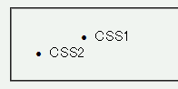

li要素など、リストマークがつけられた要素をポジショニング相対配置（position: relative;）すると、リストマーカーが消える。
<ul> <li style="position:relative; left:50px;">CSS1</li> <li>CSS2</li> </ul>
「CSS1」とあるli要素は相対配置しています。
WinIE6.0での表示（標準モード）
N6.2.3での表示（標準モード）
CSS2では、positionプロパティに「absolute」か「fixed」が指定された要素はdisplayプロパティが「block」に設定されると決められています。従って、これらの場合li要素のリストマーカーは表示されません。しかし、相対配置の場合はdisplayプロパティは指定どおりの値になるため、リストーマーカーは表示されるはずです。
positionプロパティの指定に関わらず、 display: list-item; 指定はそのまま引き継がれます。従って、このような場合は常にリストマーカーが表示されることになります。
Moz1.0ではリストマークが表示されます。